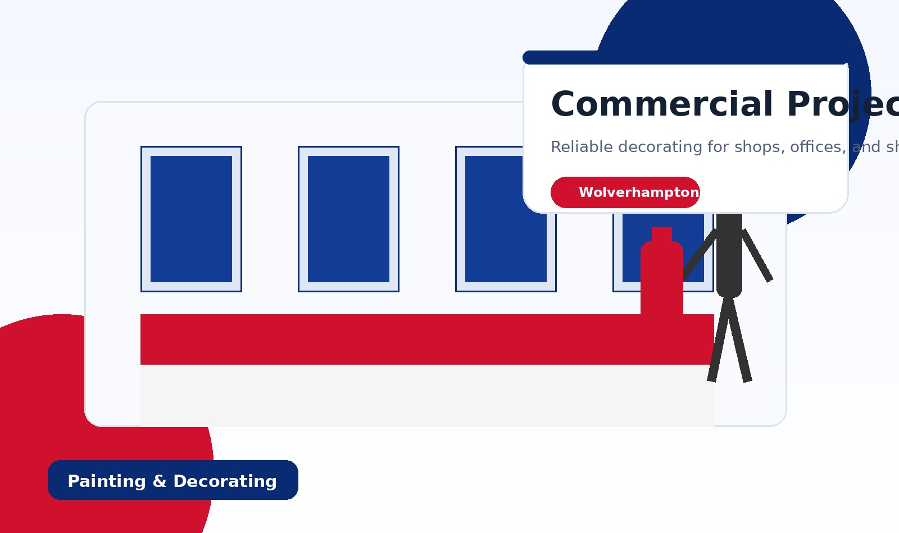

01
Interior Painting
Bedrooms, lounges, kitchens, bathrooms, hallways, ceilings, skirting boards, doors and detailed woodwork.
Law and Son Decorators provides reliable interior and exterior decorating for homeowners, landlords and businesses across Wolverhampton. From single-room refreshes to full property repainting, every job is carried out with careful preparation, tidy workmanship and attention to detail.
Whether the job is a single room, a full property or a business space, the aim is always the same: careful preparation, neat application and a finish that looks right when the work is complete.
Bedrooms, lounges, kitchens, bathrooms, hallways, ceilings, skirting boards, doors and detailed woodwork.
Walls, render, fencing, gates, garages and other exterior surfaces that need a tidy, durable finish.
Fast, practical redecoration for rental properties that need to be ready for viewings or new tenants.
Shops, offices, communal spaces and business interiors that benefit from a smarter, better-presented look.
Filling, sanding, making good, priming and surface preparation that helps the final finish last longer.
Each job is quoted around the size of the work, the condition of the surfaces and the level of preparation required.
Decorating is about more than colour. Customers want clear communication, tidy working, proper preparation and a finish they can feel good about every day.
From interior room refreshes to exterior repainting and commercial spaces, these sections show the kind of work Law and Son Decorators can help with across Wolverhampton.

Ideal for bedrooms, living rooms, hallways, kitchens, ceilings, trims and woodwork examples.

Suitable for frontage painting, render, fences and weather-ready exterior transformations.

Suitable for shops, offices, communal spaces and customer-facing business premises.
Use the enquiry page to send over the details of the job, your area and the type of work you need. It is the quickest way to request a quote online.